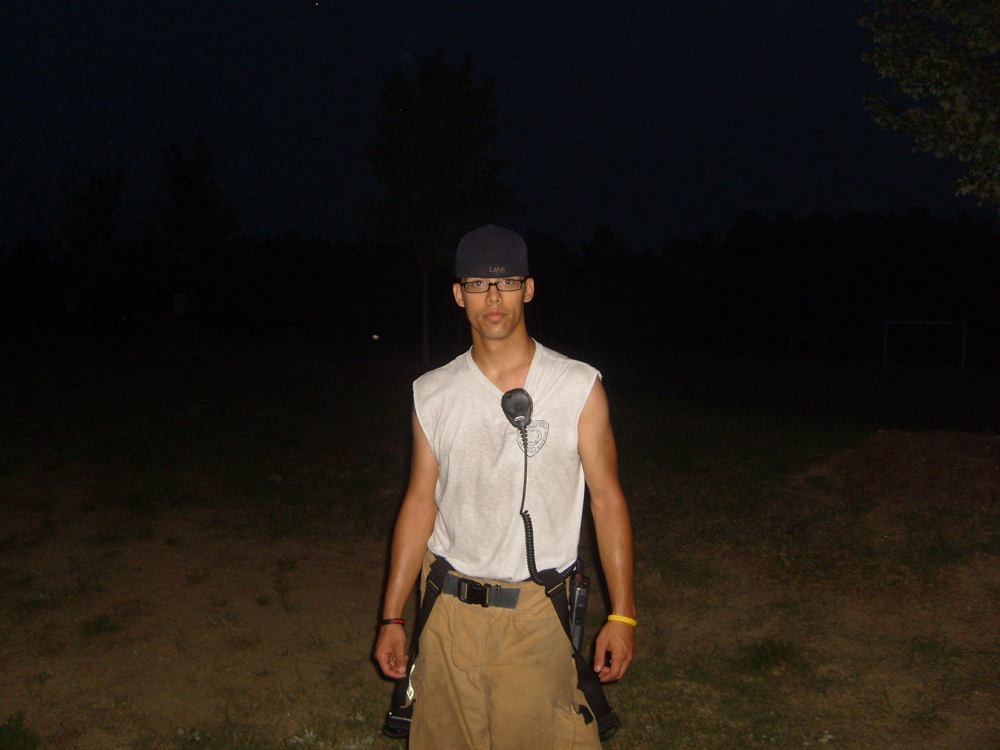
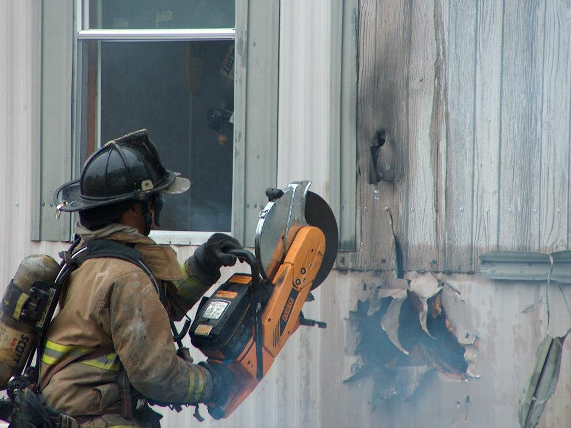
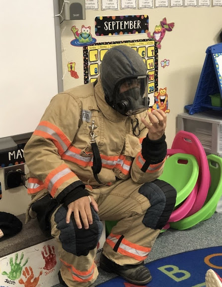
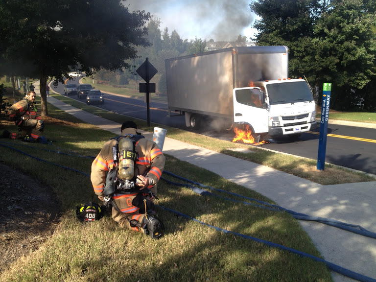
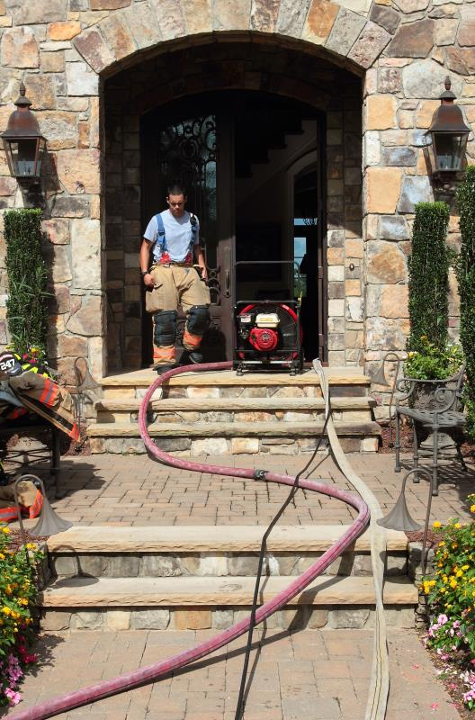

About Me
I’m Garrett, a Junior Software Developer based in Germany, currently completing a full-stack development program. After 18 years working as a Firefighter/EMT, life threw me a curveball, making me medically unable to continue my career. So, instead of rolling over and giving up I decided to transition into software development to build reliable, user-focused tools that solve real problems.
My background in emergency services taught me how to stay calm under pressure, communicate clearly, and make decisions quickly—all skills that translate directly into debugging, collaborating with teams, and shipping stable features.
From Firefighting to Full-Stack Development?
Being a firefighter and a software developer may seem worlds apart, but both roles require quick problem-solving, precision under pressure, and teamwork to be successful. Firefighters must assess dangerous situations and respond with decisive action, just as developers must debug code or manage system failures swiftly and effectively.
Both professions rely heavily on protocols—firefighters follow safety procedures, while software developers follow coding standards and best practices. Adaptability is key in both jobs, as no two fires or code issues are exactly the same, and both must be prepared to learn and evolve with new technologies and challenges.





